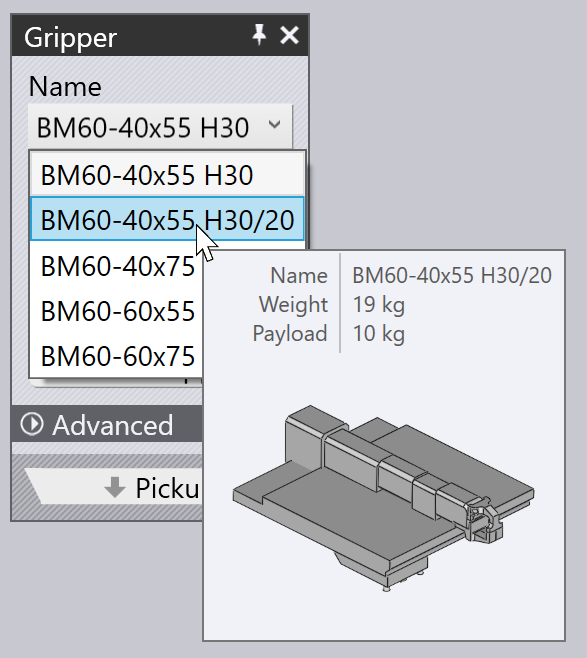

Prélèvement depuis le distributeur
Les petites pièces sont manipulées à l’aide d’un préhenseur mécanique, également appelé préhenseur à mors dans TecZone Bend. Si la pièce est plus petite que le format A4 environ, TecZone Bend passera automatiquement à l’utilisation d’un préhenseur à mors. Ce préhenseur ne peut prélever que des pièces provenant d’une station de distribution (également appelée distributeur de format brut). Ces réglages influencent ce processus de prélèvement :
-
La position et le sens de rotation du distributeur dans la cellule de la machine.
-
Le sens de rotation de la pièce sur le distributeur.
-
La position et le sens de rotation du préhenseur à mors sur la pièce.
Les panneaux utilisés pour modifier tous ces réglages sont affichés ci-dessous. Ils sont tous reliés entre eux par des liens de navigation haut/bas qui mènent à d’autres panneaux dans un ordre logique :

Comme le montre l’image ci-dessus, ces panneaux sont également facilement accessibles en cliquant simplement sur divers objets de la simulation :
-
Pour ouvrir le panneau Distributeur, cliquez sur le distributeur.
-
Pour modifier le sens de rotation de la pièce sur le distributeur, cliquez sur le format brut situé sur le distributeur (définissez d’abord l’étape actuelle sur Prélèvement en cliquant sur la colonne P dans le navigateur).
-
Pour modifier la position de préhension du préhenseur sur la pièce, cliquez sur le préhenseur.
Panneau Distributeur
Cliquez sur le distributeur pour ouvrir le panneau Distributeur. TecZone Bend place la pièce au coin d’alignement du distributeur et positionne les bras préhenseurs à ventouse aux coins de la pièce. Vous pouvez modifier la configuration du bras et l’emplacement du distributeur à l’aide de ce panneau.
-
Utilisez les réglages Lift, Position et Angle pour régler la position et l’orientation du distributeur, afin qu’il corresponde à la position réelle dans la cellule.
Configuration d’aspiration
Les réglages dans le paramètre Aspiration sont utilisés pour configurer les bras à ventouse. Ces réglages sont purement indicatifs et ne sont pas critiques, car ils ne sont pas transmis à la machine dans le programme CN. L’opérateur de la machine devra régler les bras manuellement (éventuellement en se référant à la fiche de réglage qui accompagne le programme CN).
-
Sélectionnez un Arm et modifiez les réglages Angle et Length pour faire pivoter et étendre le bras jusqu’à ce que les ventouses soient positionnées sur la pièce.
-
Utilisez le réglage Type pour changer les ventouses montées sur le distributeur.
| Etant donné que la configuration de l’angle et de la longueur des bras ne fait pas partie du programme CN généré par TecZone Bend, il ne vérifie pas réellement que les bras ne se croisent pas ou n’entrent pas en collision les uns avec les autres. |
Panneau Prélèvement
Le panneau Prélèvement est utilisé pour configurer le sens de rotation de la pièce sur le distributeur. Lorsque vous faites pivoter ou retournez la pièce, TecZone Bend sélectionne un plan approprié pour maintenir la pièce (car le préhenseur ne peut toujours venir que d’une seule direction). Vous pouvez afficher ce panneau en cliquant sur le format brut situé sur le distributeur.

-
Le bouton Rotate Part permet de faire pivoter la pièce de 90 degrés. Dans l’image ci-dessus, la pièce n’est pas dans une orientation idéale pour servir de référence par rapport au coin du distributeur. Voici un meilleur résultat, après quelques opérations de rotation :

-
Si les formats bruts du distributeur sont inversés, vous pouvez utiliser le bouton Flip Part pour miroiter le modèle afin qu’il corresponde :

Alignement de tout bord
Parfois, ces rotations à 90° peuvent ne pas être suffisantes. Supposons que vous souhaitiez aligner le bord cible (indiqué dans l’image ci-dessous) avec la référence Z sur le distributeur :
Cliquez sur Align Edge et choisissez l’option Align with Z dans le menu de la fenêtre contextuelle. Cliquez ensuite sur la pièce proche du bord cible. Ce bord est désormais aligné avec la référence du distributeur. Le résultat est affiché ci dessous below[1], après quelques ajustements de la position et du sens de rotation du préhenseur afin de mieux l’adapter à ce nouvel alignement) :

Panneau Préhenseur
Le panneau Préhenseur sert à positionner le préhenseur sur la pièce, à passer à un autre préhenseur et à configurer les axes de rotation et de glissement du préhenseur lorsqu’il prélève la pièce.

-
Utilisez la liste Name pour sélectionner un nouveau préhenseur dans la liste des préhenseurs à mors disponibles pour cette machine. Lorsque vous parcourez les noms de la liste, une miniature du préhenseur s’affiche :
 -
Utilisez les réglages Position et Angle pour positionner et orienter le préhenseur par rapport à la pointe de centrage du plan de préhension. Ce centre est indiqué par les doubles cercles dans l’image ci-dessus. Voici la même pince vue d’en haut, après avoir ajusté sa position et son angle :

-
Les boutons Swivel Neck et Slide Gripper sont utilisés pour changer la configuration du col et de la coulisse du préhenseur. Voici les résultats obtenus à partir de la première configuration ci-dessus, après avoir appliqué ces opérations :

-
Le bouton Use Vacuum Grip permet de passer à l’utilisation d’un préhenseur à ventouses. Il s’agit en fait d’un nouveau calcul complet de la pièce. Le distributeur n’est plus utilisé et la pièce est désormais prélevée sur une palette. Les séquences de pliage, les reprises de la pièce et le modèle de dépôt sont tous recalculés afin de mieux les adapter à un préhenseur à ventouses.
Modification du plan de préhension
La commande Set Grip Plane est utilisée pour saisir la pièce par un plan différent. Cliquez sur ce bouton, puis déplacez le curseur sur le plan vers lequel vous souhaitez déplacer le préhenseur. Lorsque vous effectuez cette opération, une croix est dessinée sur ce plan pour indiquer qu’il est sélectionné :

Cliquez sur le plan pour déplacer le préhenseur vers ce plan, comme illustré dans l’image ci-dessous. En général, de telles modifications dans le plan de préhension nécessitent également quelques changements dans les séquences de pliage, des modifications dans les reprises de pièce, etc.